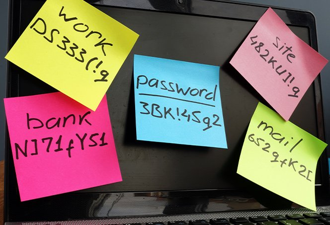

¿Por qué es importante cambiar las contraseñas periódicamente?

El cambio regular de contraseñas es una práctica de seguridad fundamental para proteger tus cuentas y datos personales de posibles ataques. Las contraseñas pueden verse comprometidas debido a filtraciones de datos, ataques de fuerza bruta o por la reutilización de la misma contraseña en varios sitios.
Beneficios de cambiar tu contraseña periódicamente
- Protección contra accesos no autorizados: Cambiar las contraseñas reduce la probabilidad de que alguien obtenga acceso a tus cuentas si tus credenciales han sido expuestas.
- Reducción de riesgos en caso de filtración: Si una contraseña se ve comprometida en una filtración, cambiarla periódicamente disminuye la exposición de tus datos.
- Mejor control de seguridad: Cambiar las contraseñas regularmente te obliga a revisar y fortalecer la seguridad de tus cuentas.

Consejos para crear contraseñas seguras
- Usa una mezcla de letras mayúsculas, minúsculas, números y caracteres especiales.
- Evita el uso de información personal como fechas de nacimiento o nombres.
- No reutilices contraseñas en varios sitios web o aplicaciones.
- Utiliza un gestor de contraseñas para generar y almacenar contraseñas seguras.
Recuerda que el cambio periódico de contraseñas y el uso de contraseñas seguras son esenciales para proteger tu información personal en el mundo digital.